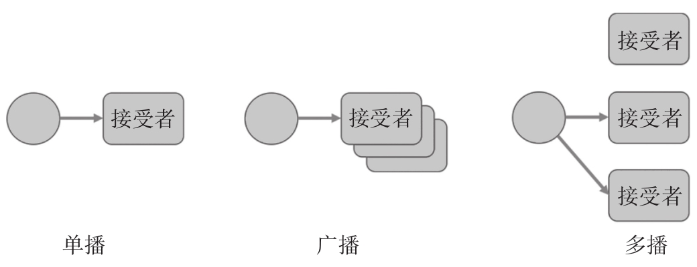

在RxJS中，Observable和Observer的关系，就是前者在播放内容，后者在收听内容。播放内容的方式可以分为三种：
·单播（unicast）
·广播（broadcast）
·多播（multicast）
所谓单播，就是一个播放者对应一个收听者，一对一的关系，比如，你使用微信给你的朋友发送信息，这就是单播，你发送的信息只有你的朋友才能收到。
单播只有一个接受者，但是有时候我们希望所有人都知道某个消息，这就是广播，比如，有一个好消息你不想只分享给一个人，而是想告诉所有的同事或者同学，你就在办公室或者教室里大声吼出这个好消息，所有人都听见了，这就是“广播”。
当然，还有一些八卦消息，你想要分享给一群朋友，但并不想分享给所有人，或者不想在公共场合大声嚷嚷，于是你在微信上把相关朋友拉进一个群，在群里说出这个消息，只有被选中的朋友才能收到这条消息，这就叫做“多播”，如图10-1所示。

图10-1 单播、多播和广播的区别
在RxJS领域，对这三种传播方式的支持如何呢？首先，单播是绝对支持的，实际上，到目前为止，书中涉及的例子大都是单播，也就是Observable和Observer都是一对一的关系。
其次，对于广播，并不是RxJS支持的目标，因为已有很多现成的解决方法，例如，Node.js中的EventEmitter支持广播的模式，下面是一段使用EventEmitter实现广播的例子：
import EventEmitter from 'events';
const eventHub = new EventEmitter();
eventHub.on('data', (info) => console.log(info));
eventHub.emit('data', 'some data');
eventHub.emit('data', 'some other data');
广播的问题是，发布消息的根本不知道听众是什么样的人，于是筛选消息的责任就完全落在了接收方的身上，而且广播中容易造成频道冲突，就像无线电的共用频段，如果不同的几组人都在用一个频段交流，有的人说的是交通拥堵情况，有的人协调的是餐厅服务，这样很容易乱套。
因为广播这种方式影响全局环境，难以控制，和RxJS的设计初衷就违背，所以，我们不考虑用RxJS实现广播。
最后，来看一下多播，RxJS是支持一个Observable被多次subscribe的，所以，RxJS支持多播，但是，表面上看到的是多播，实质上还是单播。
下面是一个表面上看起来是“多播”的代码例子：
import {Observable} from 'rxjs/Observable';
import 'rxjs/add/observable/interval';
import 'rxjs/add/operator/take';
const tick$ = Observable.interval(1000).take(3);
tick$.subscribe(value => console.log('observer 1: ' + value));
setTimeout(() => {
tick$.subscribe(value => console.log('observer 2: ' + value));
}, 2000);
代码清单10-1 Cold Observable无法实现多播
上面的代码中，利用interval和take的组合生成Observable对象tick$，以间隔一秒的节奏产生递增整数序列，然后给tick$添加了两个Observer，我们有意让第二个Observer延时1.5秒钟之后才添加。
你觉得上面的代码运行结果是怎样？可能你会觉得，因为第二个Observer延时了1.5秒才添加，所以错过了tick$在1秒时吐出的数据0，那么，程序输出应该只输出5行，像下面这样。
observer 1: 0 observer 1: 1 observer 2: 1 observer 1: 2 observer 2: 2
实际上，上面不是正确的输出，这段代码的运行结果是下面这样。
observer 1: 0 observer 1: 1 observer 2: 0 observer 1: 2 observer 2: 1 observer 2: 2
第二个Observer依然接收到了0、1、2总共三个数据。
为什么会是这样的结果？
因为interval这个操作符产生的是一个Cold Observable对象。